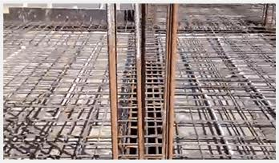
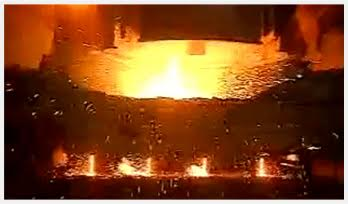
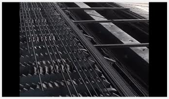
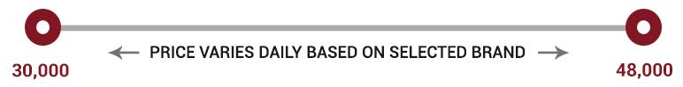

1 IMPORTANT POINTS
Q What is the use of cement in construction?
A Cement plays an important role of binding all the construction materials like sand, aggregates, TMT, blocks, bricks, etc together. It is used in making concrete and mortar.

Q What is concrete?
A Concrete is made from the mixture of coarse aggregates, sand, cement and water. It is used in making columns, slabs, flooring and footing.
Q What is mortar?
A Mortar is a workable paste made from the mixture of sand, cement and water. It is used to bind together bricks and blocks.
Q How is cement made?
A TMT bars are made using the following 4 steps
STEP 1 Steel is recycled.

STEP 2 Iron billets are produced using recycled steel.
STEP 3 Billets are passed through rollers of decreasing diameter.
STEP 4 Formed steel bars are subjected to intensive cooling.

Q What is cement sold in the market?
A Cement is sold in a bag of 50 kg except that of white cement. White cement is sold in a variety of packages from 5kg to 50kg.
2 TYPES
Q What are the types of cements available in India based on their chemical properties?
A
| Ordinary Portland Cement (OPC) | Portland Pozzolana Cement (PPC) | Portland Stag Cement (PSC) | White Cement | |
| Uses | Construction work in mid or normal level of environmental conditions | Construction work with high volumes of cement. Mass construction projects. | Construction near sea-water or sea-soil;Water treatment plants;Sewage disposal treatment plants. | Fixing white and vitrified tiles Making false ceilings;Creating shades of different colors |
|---|
Q What are the different types of ordinary portland cement?
A
| Types | 53 Grade OPC | 43 Grade OPC | 33 Grade OPC |
|---|---|---|---|
| Uses | Concrete and mortar work | Plastering work | Not used much |
3 BRANDS
ACC, PriyaGold, BirlaShakti, Zuari, Maha Gold, Coromandel King, Jaypee, JSW, Dalmia, ACC+, BirlaSuper, Ramco, Bharathi, Ultratech, Bhavya, CCI, Chettinad, Sagar, JK, Binani, KCP, Supreme, Birla Gold
4 STORAGE AND HANDLING
Q How to store cement bags on site?
A
CementStorageShed
Cement shed should not have open windows. Cementshould be stored well above the ground, preferably, on polythene sheet or wooden plank. Cement bags should not be placed touching the walls. The whole stack should be wrapped in the polythene if possible.
FIFOMethod
First in,first out method should be followed to clear theinventory. Put label on the cement bags to know the date oftheir arrival so that those bags can be utilised earlier than the otherbags.
CementStack
Cement bags should be stacked length wise and width wiseon the top of each other. The height of the stack should not be more than 10 bags to avoid lumping due to high pressure.
5 COSTING AND ESTIMATION
Q What is the cost of the cement bags in the market?
A The price of 50kg cement bag can range from Rs.300 per bag to Rs.400 per bag based on the selected brand. Thus, Grey cement can cost Rs.6 to Rs.8 per kg. White cement is costlier than the grey cement. It can cost Rs.20 to Rs.30 per kg.

Q What is the estimated amount of cement bags to construct a house?
A Enter your built up area and no. of stories in the following form and we will calculate the tentative amount of TMT required.
Enter per ton price of TMT
Enter per ton price of TMT
Number of cement bags required 0.00 ton